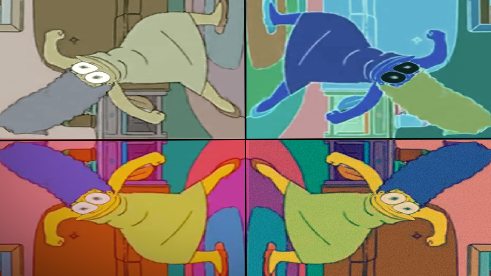

Kylie's Mod Spotlight
A wordpress site I made as part of my training in Hopeworks, demonstrating my understanding of the
wordpress platform and its unique quirks and limitations, as well as my understanding of modern web
design.
In this case I made a website centered around the Minecraft modding scene, an online community built
around creating third-party addons for a popular video game. This page highlights some of my favorite
creations, and details why I like them.
Pixlr Photo editing


The base image that I started with for each project.
Pixlr is a free equivalent to photoshop, and was what I used in my Hopeworks training to practice and
demonstrate my ability to edit images for use in various projects. I decided to base all of my projects
off of a particular base image that I just found particularly funny.
This Portfolio!
This portfolio was made to be an addition to my portfolio in and of itself. I intentionally avoided using
any site-building tools like wix or wordpress, and instead built my site entirely from scratch. It is
hosted on a subdomain of my family's own domain, set up through InMotion hosting.
I used the hosting services Cpanel interface, Github, and VScode to develop this site, and keep its files
updated through the built-in version control software. I also made special effort to do my best to make
sure the site was usable on a number of different devices, as it is made to scale with the width of the
users screen.
I know in the grand scheme of things, this site is nowhere near perfect, but I like to think it
demonstrates a solid grasp of web development, especially considering I've developed it in less than a
couple weeks, after only a couple months of training.